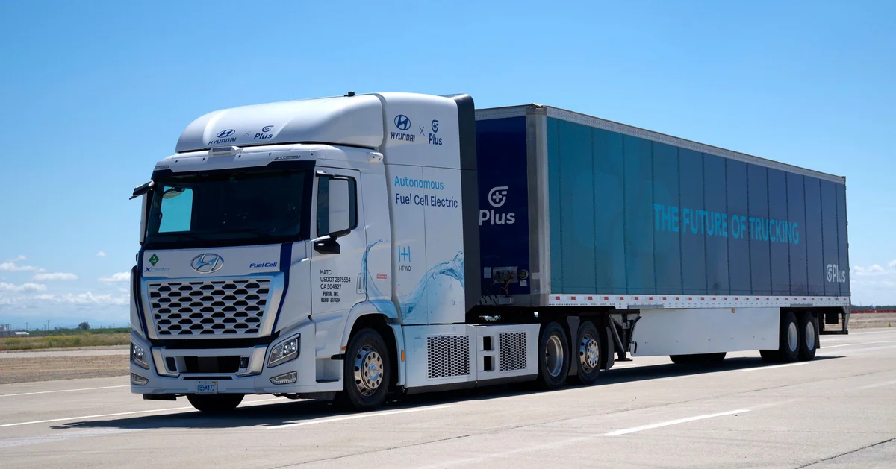
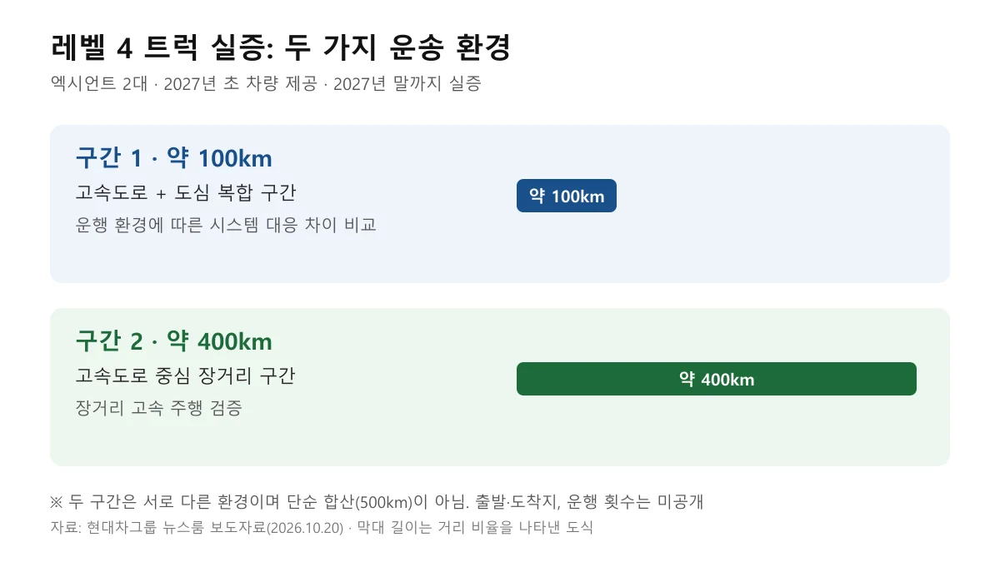
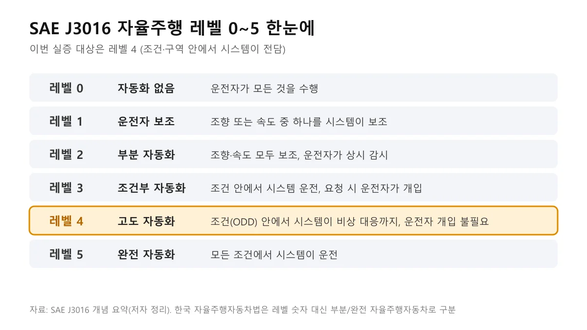
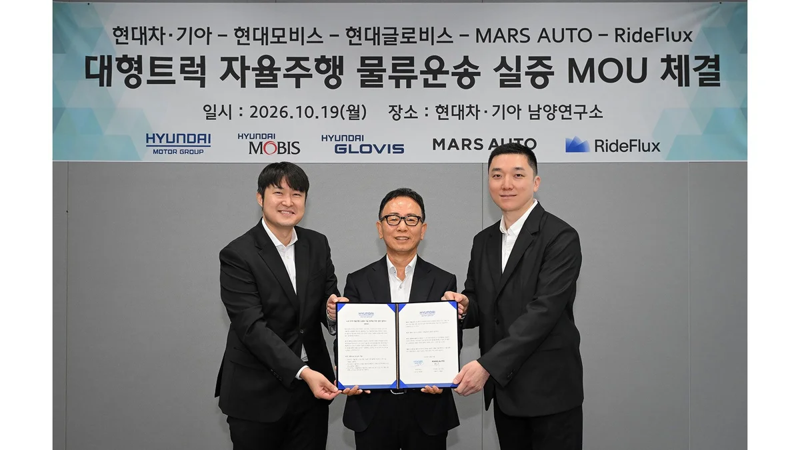
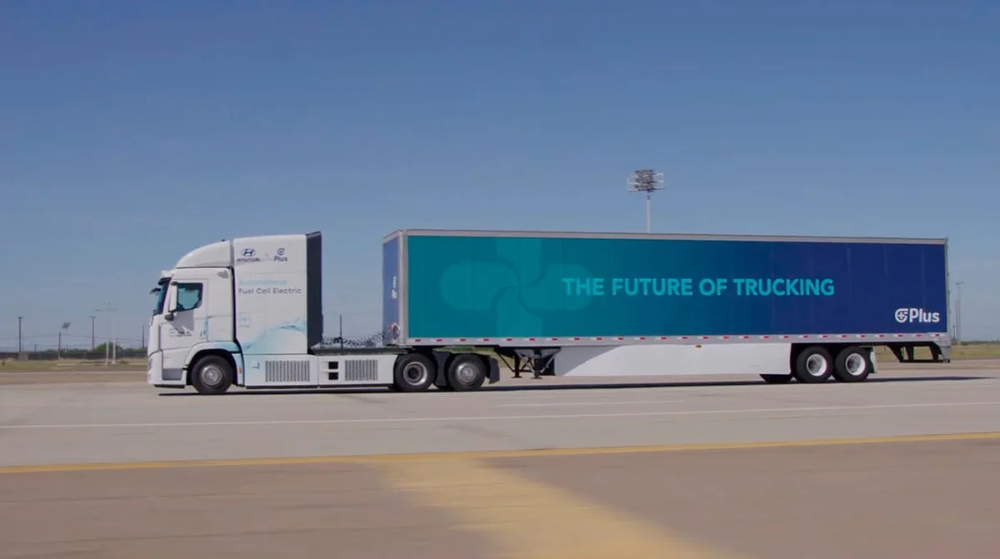
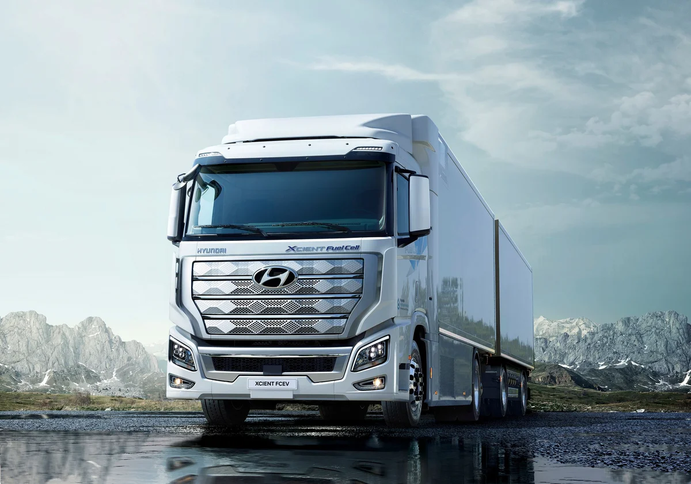
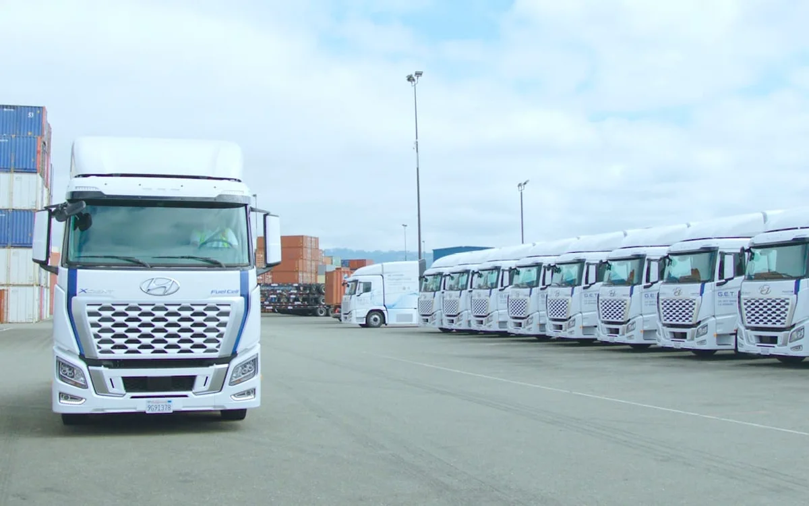
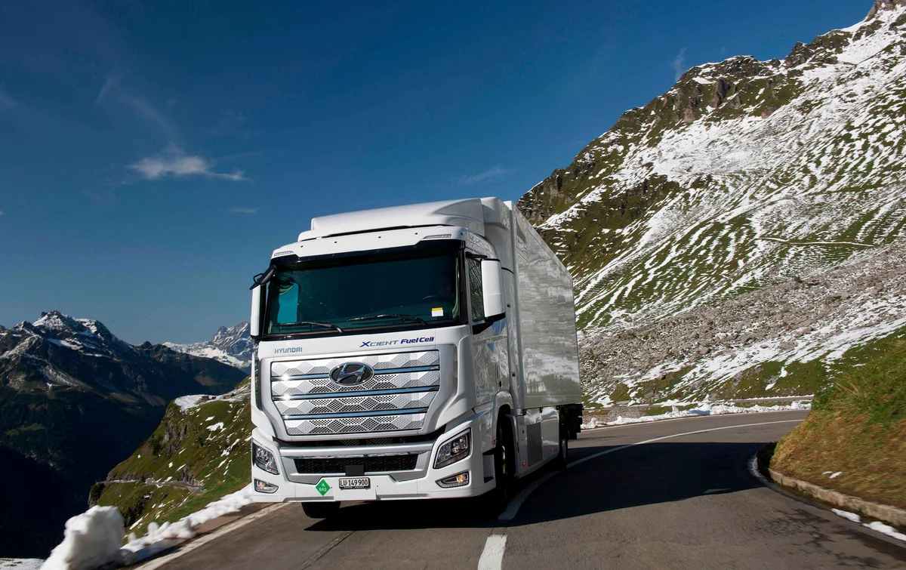

▲ 대형트럭 자율주행 물류운송 실증 협약 후 기념 촬영. 협약 일시는 현장 사진에 2026.10.19로 표기돼 있다 ⓒ 현대차그룹 (보도자료·뉴스룸 제공, 이용 책임은 게재자에게 있음)
"운전자 없이 달리는 레벨 4 대형트럭, 우리 고속도로에 언제 나오는 걸까?" 현대차·기아가 협약을 맺고 2026년 10월 20일 공개한 실증 계획이 그 첫 단계다(협약 현장 사진에는 10월 19일로 표기돼 있고, 일부 보도는 20일 체결로 적었다). 엑시언트 트럭 2대를 내년(2027년) 초 투입해 연말까지 실제 물류 노선을 달려 보겠다는 내용이다.
이 글은 현대차그룹 뉴스룸 보도자료를 기준으로 협약 내용을 정리하고, 레벨 4가 무슨 뜻인지, 국내에서 자율주행 트럭을 도로에 올리려면 어떤 허가가 필요한지를 법령으로 확인했다. 보도자료에 없는 내용은 "확인하지 못함"으로 남겼다.
1. 누가 무엇을 맡나: 5개 회사, 역할은 이렇게 나뉜다
현대차그룹 뉴스룸에 따르면 현대차·기아는 경기 화성 남양연구소에서 현대모비스, 현대글로비스, 마스오토, 라이드플럭스와 레벨 4 자율주행 대형트럭 실증 업무협약을 맺었다. 목적은 그룹이 가진 실제 물류 노선에서 차량 제어 기술과 자율주행 시스템의 연계 성능을 검증하고, 상용화에 필요한 데이터를 모으는 것이다. 협약 현장 사진에는 "2026.10.19(월)"이 적혀 있고, 보도는 20일에 나왔다.
▲ 대형트럭 자율주행 물류운송 실증 협약 후 기념 촬영. 협약 일시는 현장 사진에 2026.10.19로 표기돼 있다 ⓒ 현대차그룹 (보도자료·뉴스룸 제공, 이용 책임은 게재자에게 있음)
| 참여사 | 맡은 일 |
|---|---|
| 현대차·기아 | 실증 차량과 차량 제어 기술 개발. 자체 선행 개발과 외부 전문 기업 협업을 병행해 여러 자율주행 시스템을 받아들일 수 있는 차량 기반 기술을 확보 |
| 마스오토·라이드플럭스 | 국내 자율주행 소프트웨어 기업. 각자 특화 차량에 자율주행 시스템을 적용 |
| 현대모비스·현대글로비스 | 기존 물류 노선을 활용한 실증 운영 지원 |
공식 보도자료는 현대차그룹 뉴스룸에서 볼 수 있다. 현대차그룹 뉴스룸 보도자료 바로가기
이번 협약을 "MOU"라고 부르는 보도가 많지만, 보도자료의 표현은 "업무협약"이다. 엑시언트 공급 계약 같은 별도의 금액·수량 합의는 보도자료에서 확인하지 못했다. 현대차·기아는 지난 10월 1일 서울시와 레벨 4 자율주행 시내버스 업무협약도 맺었다. 버스 쪽 내용은 서울 자율주행 시내버스 생태계 기사에 정리했다.
2. 엑시언트 2대, 100km와 400km: 차량·구간·일정
실증 차량은 엑시언트 수소전기트럭 1대와 엑시언트 1대, 모두 2대다. 보도자료는 현대차·기아가 개발을 시작했으며 내년 초 제공하고, 각 차량에는 자율주행 시스템 연동을 위한 맞춤형 제어기와 차량 인터페이스를 적용한다고 밝혔다. 나머지 1대의 동력 방식은 보도자료에 없다. 일부 영문 보도는 이 차를 디젤이라고 썼지만, 공식 자료에서는 확인하지 못했다.

▲ 엑시언트 수소전기 트랙터와 트레일러 조합. 미국에서 플러스AI와 개발한 자율주행 엑시언트 차량으로, 이번 국내 실증 차량과는 별개다 ⓒ 현대차그룹 (보도자료·뉴스룸 제공, 이용 책임은 게재자에게 있음)
| 항목 | 내용 | 비고 |
|---|---|---|
| 차량 | 엑시언트 2대(수소전기 1대 + 1대) | 2번째 차량 동력은 공식 미공개 |
| 차량 제공 | 2027년 초 | "내년 초"를 연도로 환산 |
| 실증 기간 | 2027년 말까지 | "내년 말까지"를 연도로 환산 |
| 구간 1 | 약 100km, 고속도로·도심 복합 | 운행 환경에 따른 시스템 대응 차이를 비교 |
| 구간 2 | 약 400km, 고속도로 중심 장거리 | 장거리 고속 주행 검증 |

▲ 실증 두 구간 비교. 막대 길이는 거리 비율을 나타낸 도식이다 ⓒ 카프리즘 자체 제작 (현대차그룹 보도자료 기준)
일부 매체는 두 구간을 합쳐 "500km"라고 표현했는데, 보도자료상 100km와 400km는 서로 다른 두 가지 운송 환경이다. 구체적인 출발·도착지나 운행 횟수, 시험운전자 탑승 여부는 보도자료에 없었다.
📍 왜 "안전 이중화"를 강조할까
- 이중화란: 일부 시스템에 이상이 생기면 보조 시스템이 그 기능을 대신해 차량을 안전한 상태로 유지하는 기술
- 대형트럭에서 중요한 이유: 장거리·야간 운행 비중이 높아 자율주행 안전성 확보의 핵심 요소라는 것이 보도자료 설명
- 이번 실증 목표: 데이터를 모아 차량 제어와 안전 이중화 기술을 고도화
3. 레벨 4란 무엇인가: SAE 기준과 국내 법의 표현
레벨 4는 미국자동차공학회(SAE) J3016 기준에서 6단계(0~5) 중 네 번째로, 정해진 조건·구역 안에서 시스템이 운전 전체를 맡고 운전자 개입을 전제하지 않는 단계다. 현대차그룹도 엑시언트 자율주행 사례를 소개하며 레벨 4를 "특정 조건이나 구역에서 사람의 개입 없이 주행하는 단계"로 풀어 썼다. 레벨 3까지는 필요한 순간 운전자가 되받는 구조지만, 레벨 4는 그 조건 안에서는 시스템이 비상 대응까지 책임진다는 점이 다르다.
핵심 단어는 "조건"이다. 레벨 4는 어디서든 무인으로 달린다는 뜻이 아니라, 지도·도로·날씨 등으로 정한 운행 설계 영역(ODD) 안에서 그렇다는 뜻이다. 그래서 이번 실증처럼 노선을 정해 놓고 데이터를 쌓는 방식이 일반적이다.
| 구분 | 레벨 3 | 레벨 4 |
|---|---|---|
| 운전 주체 | 조건 안에서 시스템 | 조건 안에서 시스템 |
| 비상 시 | 시스템이 요청하면 운전자가 개입 | 시스템이 스스로 처리, 운전자 개입 불필요 |
| 운행 범위 | 제한된 조건 | 제한된 조건(모든 조건은 레벨 5) |

▲ SAE J3016 레벨 0~5 요약표. 레벨 4가 이번 실증 대상이다 ⓒ 카프리즘 자체 제작 (현대차그룹 보도자료 기준)
한 가지 주의할 점이 있다. 한국의 자율주행자동차법(자율주행자동차 상용화 촉진 및 지원에 관한 법률)은 레벨 숫자를 쓰지 않는다. 제2조 제2항은 자율주행차를 두 종류로 나눈다. 제한된 조건에서 운행하되 필요하면 운전자 개입을 요구하는 "부분 자율주행자동차", 그리고 자율주행시스템만으로 운행할 수 있어 운전자가 없거나 운전자·승객의 개입이 필요하지 않은 "완전 자율주행자동차"다. 이 구분이 SAE 레벨 4에 정확히 대응하는지는 조문에 적혀 있지 않아 이 글에서는 단정하지 않는다.
SAE 표준 안내는 SAE 공식 페이지에서 볼 수 있다. SAE J3016 표준 바로가기
4. 국내에서 자율주행 트럭을 달리게 하려면: 허가·제도 4가지
자율주행차를 시험·연구 목적으로 도로에서 운행하려면 자동차관리법 제27조 제1항 단서에 따라 국토교통부령이 정한 안전운행요건을 갖추고 국토교통부장관의 임시운행허가를 받아야 한다. 이 요건에는 허가 대상, 고장 감지·경고 장치, 기능 해제 장치, 운행 구역, 운전자 준수 사항이 포함된다고 법에 적혀 있다. 허가를 받은 사업자는 주요 장치 변경, 운행기록, 교통사고 정보 등을 국토부에 보고해야 하고(제5항), 국토부장관은 안전운행요건에 맞지 않거나 사고 가능성이 높다고 판단하면 시정조치와 운행 일시정지를 명할 수 있다(제7항).
| 제도 | 근거 | 핵심 내용 |
|---|---|---|
| 임시운행허가 | 자동차관리법 제27조(2026.10.2. 시행분) | 자율주행차의 시험·연구 운행은 국토부장관 허가. 안전운행요건·운행 정보 보고·일시정지 명령 |
| 시범운행지구 | 자율주행자동차법 제2조 제5호, 제7조 | 규제특례가 적용되는 구역. 시·도지사 신청을 받아 국토부장관이 위원회 심의를 거쳐 지정 |
| 화물 유상운송 허가 | 같은 법 제10조 | 시범운행지구에서 자율주행차로 유상 화물운송을 하려면 국토부장관 허가(화물자동차 운수사업법 제3조는 적용 제외) |
| 보험 가입 | 같은 법 제19조 | 시범운행지구에서 연구·시범운행을 하는 자는 대통령령이 정한 보험에 가입 |
이번 현대차 실증이 이 중 어떤 방식을 쓰는지, 시험운전자가 탑승하는지는 보도자료에서 확인하지 못했다. 또 이 실증의 목적은 "실증 데이터 확보"라고만 적혀 있고, 화물 요금을 받는 유상운송인지도 밝히지 않았다. 유상 화물운송이라면 위 표의 제10조 허가가 별도로 필요할 수 있다.

▲ 협약서를 들고 선 관계자들. 안내판에 일시 2026.10.19(월), 장소 남양연구소가 적혀 있다 ⓒ 현대차그룹 (보도자료·뉴스룸 제공, 이용 책임은 게재자에게 있음)
법령 원문은 국가법령정보센터에서 확인할 수 있다. 자율주행자동차법 바로가기
5. 국내 자율주행 트럭, 어디까지 왔나
국내에서는 이미 다른 회사들이 자율주행 트럭을 고속도로에 올리고 있어, 현대차·기아의 이번 실증은 차량 제조사가 직접 판을 깐다는 점이 다르다. 흐름을 보면 소프트웨어 기업이 앞서 달리고 완성차 업체가 차량 쪽 기반을 맞추는 구조다.
- 타타대우모빌리티·라이드플럭스: 9월 3일 레벨 4 자율주행 트럭 양산 로드맵 업무협약을 맺었다. 자세한 내용은 타타대우 레벨 4 자율주행 트럭 양산 로드맵 기사에 있다.
- 라이드플럭스 유상운송 허가: 헤럴드경제·경향신문 등은 2026년 4월 16일 국토교통부가 라이드플럭스의 자율주행 유상 화물운송을 최초로 허가한다고 밝혔다고 보도했다. 서울 동남권 물류단지와 진천 롯데택배 메가허브터미널을 잇는 112km 구간(중부고속도로 포함)에서 25톤 트럭이 6월부터 주 3회 야간에 달리고, 초기에는 시험운전자가 탑승하며 2027년부터 무인 전환을 시작한다는 계획이다(보도 기준, 국토부 원문은 확인하지 못함).
- 마스오토: 복수 보도에 따르면 카메라 기반 E2E AI 자율주행 스타트업이며, 산업통상자원부 산하 한국산업기술기획평가원(KEIT) 182억 원 규모 '대형트럭 화물운송을 위한 무인 자율주행 상용화 기술개발' 과제(2025년 9월~2027년 12월)의 주관기관으로 선정됐다(보도 기준, 2025년 11월).
- 현대차·플러스AI(미국): 엑시언트 수소전기트럭에 미국 플러스AI의 레벨 4 소프트웨어를 얹은 차량이 타임지 "2025 최고의 발명품"에 올랐다. 현대차그룹은 이를 상용 수소전기차 자율주행의 첫 실도로 실증이라고 소개했다.

▲ 플러스AI 협업 엑시언트 자율주행 트레일러. 트레일러 측면에 "THE FUTURE OF TRUCKING" 문구가 보인다 ⓒ 현대차그룹 (보도자료·뉴스룸 제공, 이용 책임은 게재자에게 있음)
해외 사례와 비교하고 싶다면 캘리포니아 자율주행 트럭 허가 기사가 도움이 된다. 현대차의 승용 자율주행 일정이 2029년으로 밀린 배경은 현대차 자율주행 지연 기사에서 다뤘다.
6. 왜 하필 트럭인가: 현대차그룹이 노리는 곳
대형트럭은 정해진 노선을 반복해서 달리고 고속도로 비중이 높아, 레벨 4를 조건부로 먼저 적용하기 좋은 분야로 꼽힌다. 이번 협약에 물류 계열사인 현대글로비스와 부품 계열사 현대모비스가 함께한 이유도 같다. 차량(현대차·기아), 부품(모비스), 운송(글로비스)을 한 그룹 안에서 묶어 실증할 수 있기 때문이다.
엑시언트는 현대차그룹이 2020년부터 판매해 온 수소전기 대형트럭이다. 현대차그룹 뉴스룸은 2020년 이후 330대 이상 판매, 전체 엑시언트의 누적 주행거리 2,058만km(2025년 10월 기준)를 밝혔다. 같은 기사는 고전압 배터리를 가진 연료전지 트럭이 자율주행 연산에 필요한 전력을 감당하기 유리하다고 설명한다.

▲ 엑시언트 수소전기트럭 전면. 이번 실증 차량의 실제 모습은 공개되지 않았다 ⓒ 현대차그룹 (보도자료·뉴스룸 제공, 이용 책임은 게재자에게 있음)

▲ 엑시언트 수소전기트럭이 줄지어 선 모습. 촬영 장소와 시점은 제공 자료에 표기되지 않았다 ⓒ 현대차그룹 (보도자료·뉴스룸 제공, 이용 책임은 게재자에게 있음)

▲ 엑시언트 트럭 주행 모습(현대차그룹 뉴스룸 제공 이미지) ⓒ 현대차그룹 (보도자료·뉴스룸 제공, 이용 책임은 게재자에게 있음)
✅ 이 뉴스를 읽을 때 확인할 점
· "레벨 4 상용화"가 아니다: 이번은 2027년 말까지의 실증 협약이다. 판매·양산 일정은 보도자료에 없다
· 운전자 유무: 실증 중 운전석에 사람이 타는지는 확인되지 않았다
· 2번째 차량 동력: 공식 자료 기준 미공개. 디젤이라는 보도는 공식 확인 전이다
· 500km 표기: 100km와 400km는 서로 다른 두 환경이다
· "MOU" 표현: 보도자료는 업무협약이며 공급 계약 규모는 공개되지 않았다
7. 이 글이 확인하지 못한 것
- 실증 구간의 구체적 출발·도착지: 보도자료에 거리만 있다
- 두 번째 엑시언트의 동력: 공식 자료에 명시가 없다
- 사용 허가 유형: 임시운행허가인지 시범운행지구 특례인지, 유상운송 여부
- 시험운전자 탑승 여부와 실증 중 보험·책임 구조
- 국토부의 이번 실증 관련 공식 입장: 찾지 못했다
- 라이드플럭스 유상운송 허가의 국토부 원문: 복수 언론 보도(경향신문·헤럴드경제 등)로만 확인했다
8. 요약
현대차·기아는 현대모비스·현대글로비스·마스오토·라이드플럭스와 레벨 4 자율주행 트럭 물류 운송 실증 업무협약을 맺었다(현장 사진 표기 10월 19일, 보도자료 공개 10월 20일). 엑시언트 2대(수소전기 1대 포함)를 2027년 초 제공하고, 2027년 말까지 약 100km 복합 구간과 약 400km 고속도로 장거리 구간에서 검증한다.
레벨 4는 정해진 조건 안에서 시스템이 비상 대응까지 맡는 단계이며, 국내 자율주행 트럭은 자동차관리법상 임시운행허가나 자율주행자동차법상 시범운행지구 특례 아래 운행된다. 이번 실증의 허가 유형과 시험운전자 여부는 공개 자료에서 확인되지 않았다.